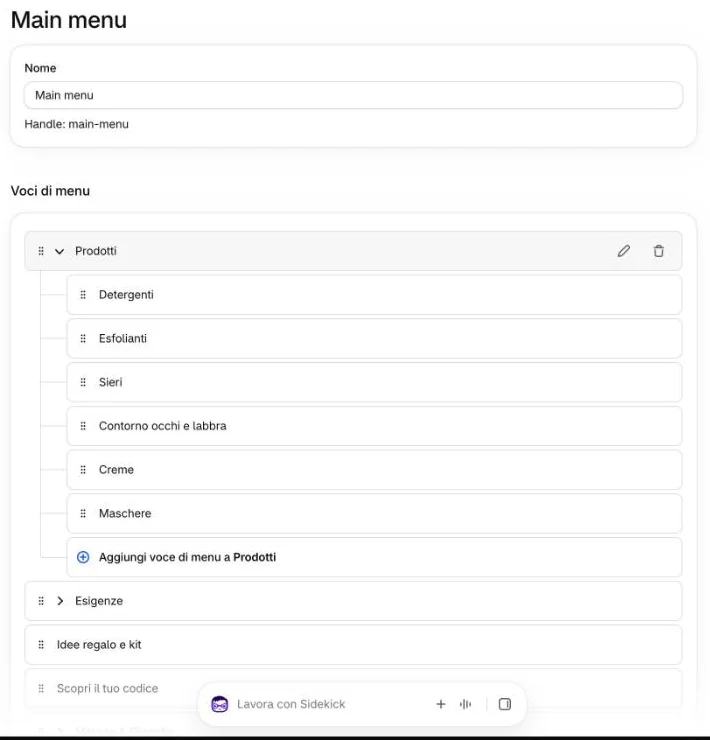
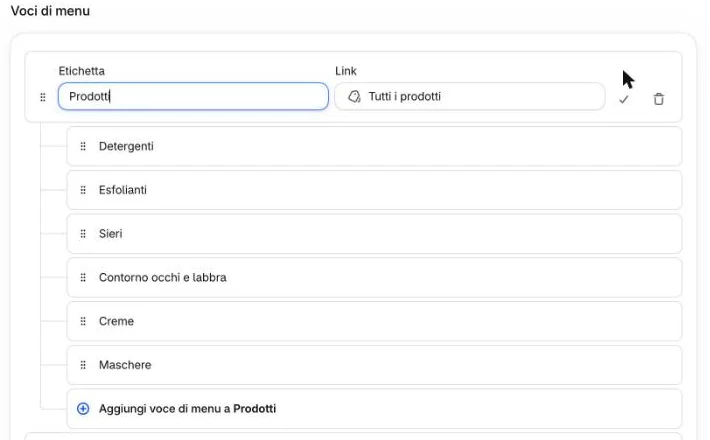

Il menu in alto del sito è il menu «Main menu» del pannello. Non c’è una bozza: ogni modifica si vede subito sul sito, quindi controllatelo appena avete finito.
Cliccate «Contenuto» → «Menu», poi «Main menu».
1
Per rinominare una voce, passateci sopra con il mouse e cliccate la matita a destra.

2
Cambiate «Etichetta» (il nome sul sito) o «Link» (dove porta), poi cliccate ✓ a destra.

3Serve anche salvare il menu?
Non l’abbiamo verificato insieme: se dopo il ✓ in alto compare un pulsante per salvare, cliccatelo. Poi aprite glode-lab.it, ricaricate la pagina e guardate il menu: la modifica è già online.
Quali nomi non cambiare?
Le sotto-voci di «Prodotti» (Detergenti, Esfolianti, Sieri…) devono restare scritte esattamente come il «Tipo» dei prodotti e collegate alla loro collezione: se no la loro scheda nella tendina resta vuota. Lo stesso per le sotto-voci di «Esigenze», che devono restare le collezioni delle esigenze.
Le voci principali (Prodotti, Esigenze, Idee regalo e kit, Scopri il tuo codice, Metodo & Filosofia) potete rinominarle, ma con nomi corti: la barra del sito è già piena.
Per aggiungere una sotto-voce, aprite la voce con la freccia ⌄ e cliccate in fondo «Aggiungi voce di menu a Prodotti» (il nome cambia con la voce).
4Cosa fa il sito con le sotto-voci?
Il tipo di tendina lo decide la prima sotto-voce della voce:
se sono collezioni di famiglia (Sieri, Creme…), la tendina ha una scheda per sotto-voce con i prodotti e, a sinistra, l’immagine della collezione (si cambia in Collezioni);
se sono collezioni delle esigenze, è la tendina «Esigenze», fatta allo stesso modo;
se sono pagine (come sotto «Metodo & Filosofia»), la tendina è un semplice elenco di link;
senza sotto-voci la voce è un link semplice. «Idee regalo e kit» fa eccezione: senza sotto-voci mostra «Kit prova» e «Idee regalo», scritti nel tema.
Dove non aggiungere sotto-voci?
Non date sotto-voci a «Idee regalo e kit», «Scopri il tuo codice» o a una voce che oggi non ne ha: una collezione come prima sotto-voce la trasformerebbe in una seconda tendina di prodotti. Se vi serve, scriveteci.
Per cambiare l’ordine, trascinate la voce tenendo la maniglia ⠿ a sinistra.
5Cosa cambia sul sito?
Le prime tre voci stanno a sinistra del logo, le altre a destra. Spostando una voce al terzo o al quarto posto, passa dall’altra parte del logo.
Non aggiungete voci principali nuove: a schermo non c’è posto. Chiedetele all’agenzia.
Per togliere una sotto-voce aggiunta da voi, cliccate il cestino a destra.
6E le voci di oggi?
Non togliete le voci principali, né le sotto-voci di «Prodotti» ed «Esigenze»: la tendina resterebbe senza quella scheda, subito, per tutti. Se una voce non serve più, scriveteci.
Sul sito
In alto in ogni pagina: le prime tre voci a sinistra del logo, le altre a destra; passando su una voce con sotto-voci si apre la tendina. Nella tendina «Prodotti» le schede (Detergenti… Maschere) sono le sotto-voci, in quell’ordine.
Sul telefono il menu si apre con le due lineette: ci sono le stesse voci, poi la prima voce del menu «Assistenza» e le pagine di «Metodo & Filosofia».
Fissi nel tema, non nel menu: il logo, «Carrello (0)», i bottoni in fondo alle tendine e, sul telefono, «Il tuo account».
 1
1